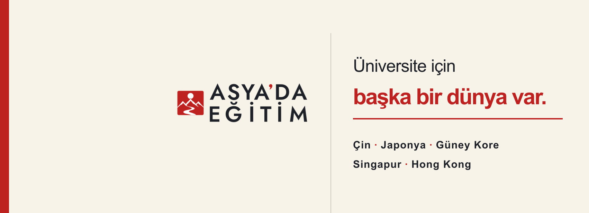

Asya'da Eğitim / Sosyal Medya / Kimlik Uygulamaları
Logolar ve
kapaklar.
Marka kimliğinin güncel logo ailesi, sosyal medya profil görselleri ve platform kapakları tek yerde. Önizlemeye tıklamak Visual Editor'ü açmaz; her kaynak için görsel, orijinal dosya ve ayrıntılı sayfa bağlantıları bulunur.
Onaylı logo ailesi
V-01 mühür ve P-01, H-02, C-03, D-04, F-05 kilitli düzenler. Aşağıdakiler tarihsel alternatifler değil, güncel onaylı SVG kaynaklarıdır.


Sosyal medya profil görselleri
Instagram profil ve tipografik daire seçenekleri. Bu çalışmaların bir bölümünün onaylanma durumu, kanonik logodan ayrıdır; onaylı logo dosyalarının yerini otomatik almaz.
Sosyal medya kapakları
X, LinkedIn ve Facebook kapakları. Görsel önizlemeler gerçek platform çıktılarına bağlıdır; tam sürüm, kırpım ve indirme seçenekleri kapakların ayrıntı sayfasında korunur.

Facebook · Sayfa kapağı
Masaüstü sürümü; mobil kırpım ayrıca mevcut
Onay ve sürüm ayrımı: Kanonik logolar kilitli marka kaynaklarıdır. Profil ve kapak alternatiflerinin burada bulunması, Instagram veya başka bir platformda yayımlandıkları ya da marka onayı aldıkları anlamına gelmez.